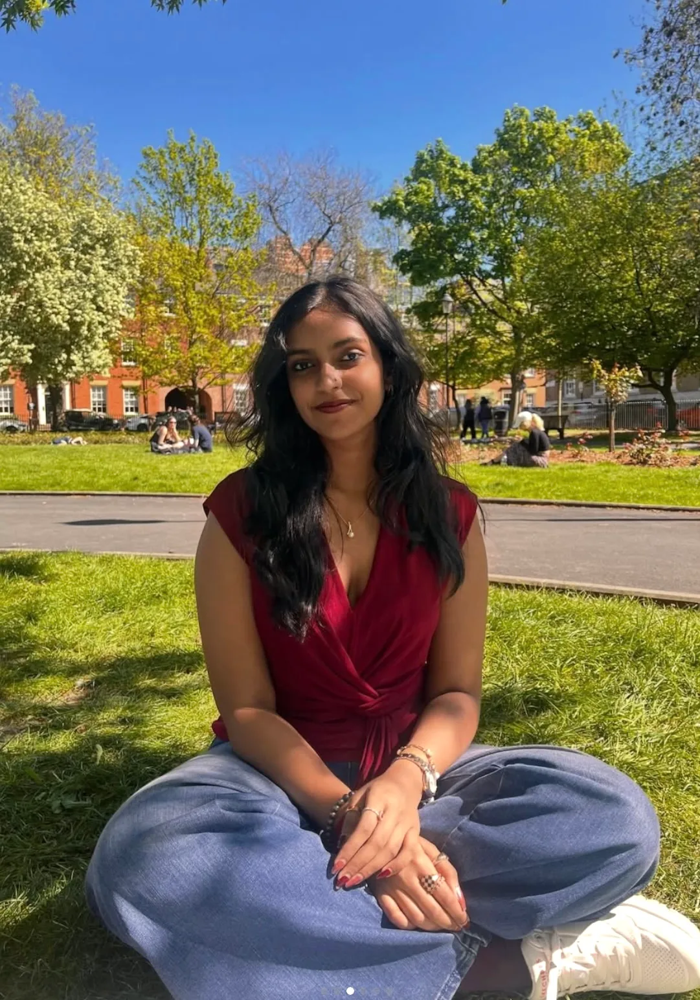
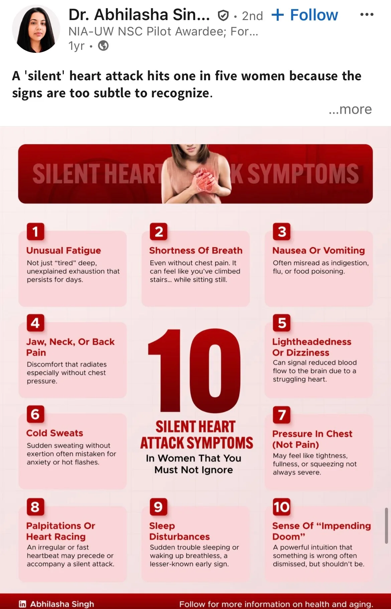
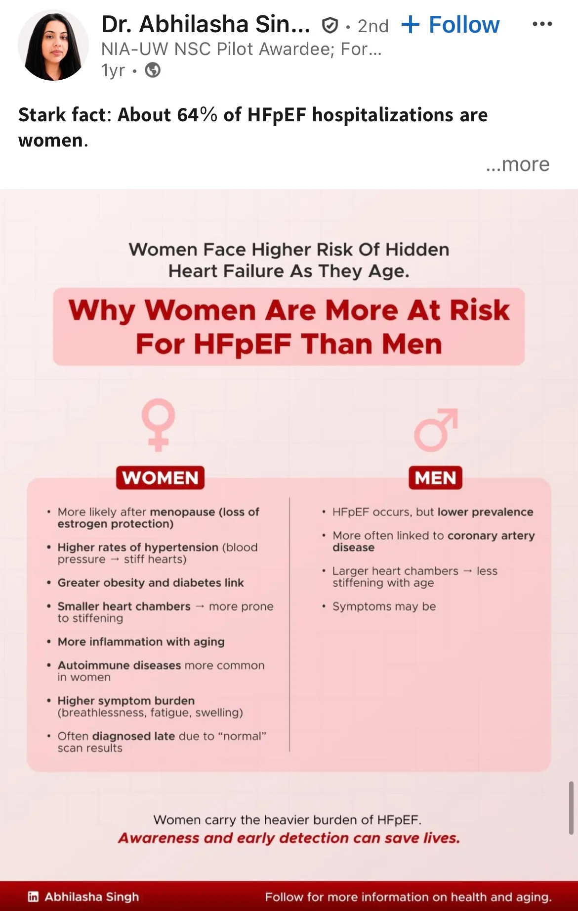
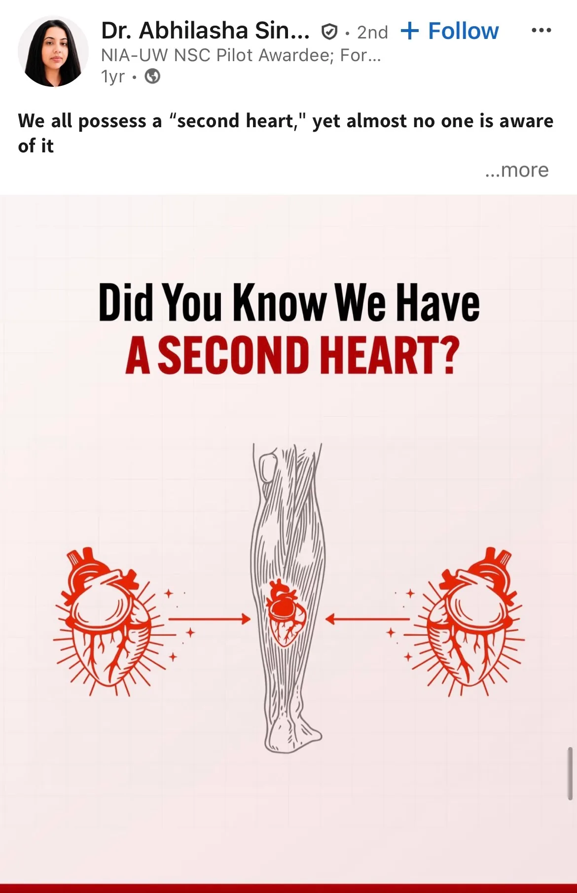
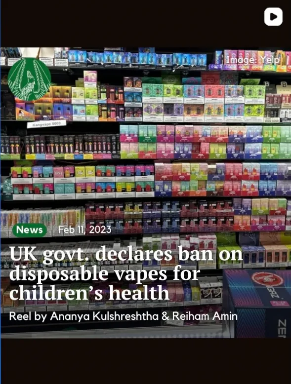
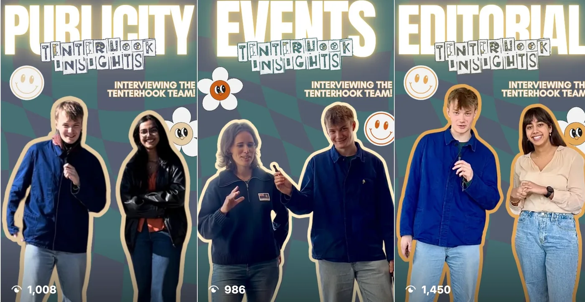
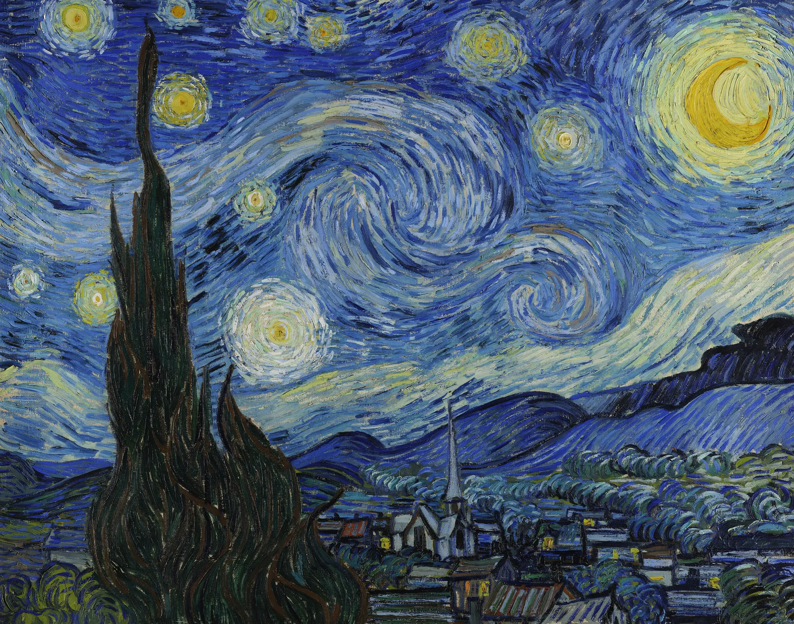
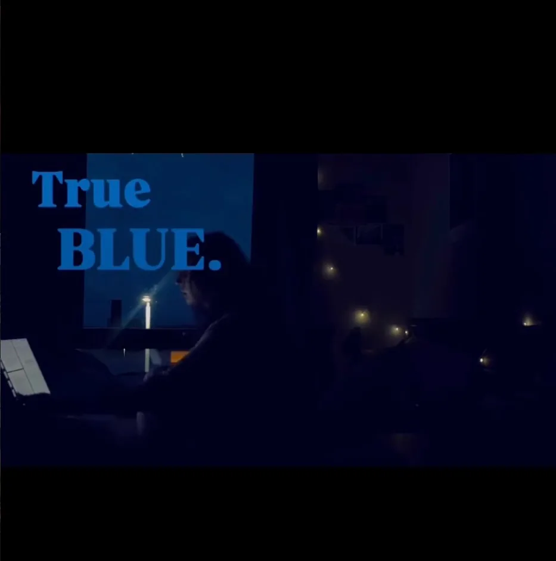
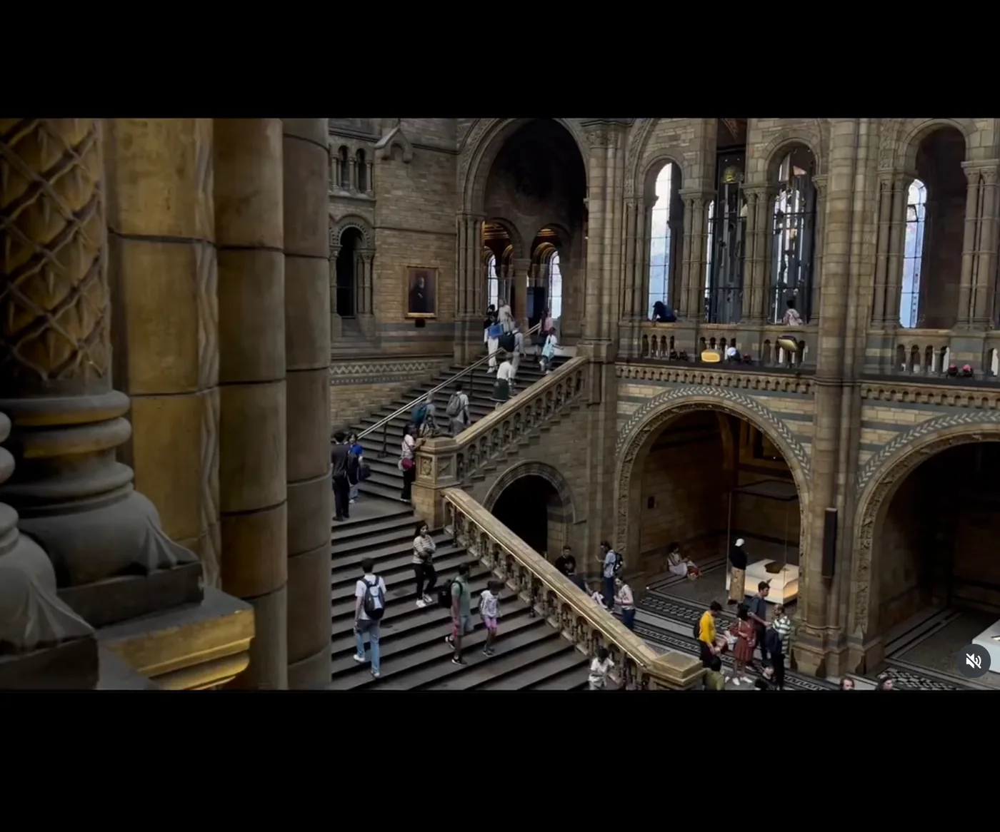
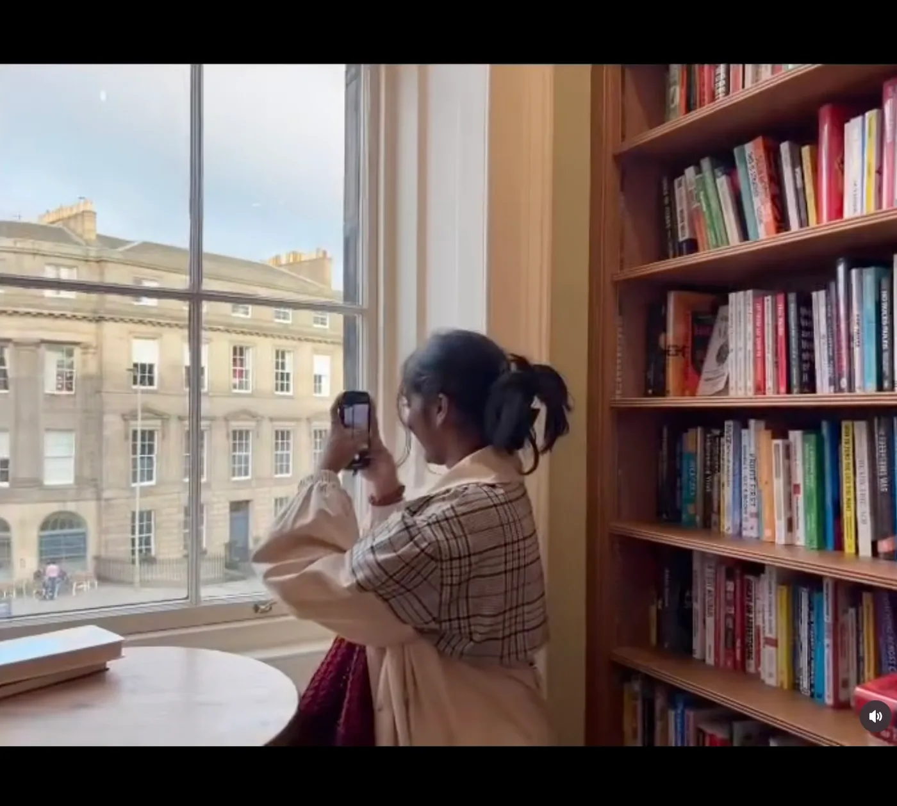

B2B strategy · Executive thought leadership · Creative direction
Social media
I write the words, build the profiles and make the posts that help serious people sound like themselves online.
You’ve built something worth talking about. I make sure it travels.
See the work
Five years, five accounts, one conviction: good social starts with a point of view.
- Client accounts managed
- 5+
- Campaign impressions
- 180K
- Posts a month
- 25+
- Team led at Hiraeth
- 70
- Monthly readers at Hiraeth
- 70K
- Engagement on TenterHook interviews
- 2.5×
06:40 — first light
Iconinc The Edge
Two years running the Instagram account for a Leeds student accommodation brand — concept, filming, editing and publishing, week after week.
The brief was never “post more”. It was to make a building feel like somewhere you’d want to live.
- Role
- Concept, filming, editing, publishing
- Scope
- Instagram · roughly two years
- Result
- Engagement doubled
09:15 — morning
The Brand Salt
Social-first content for a branding agency and its clients — ideation, filming, editing and publishing across three very different accounts.
Agency work teaches range. A carousel on minimalism, a reel on rebrands, a founder’s post — same week, same voice.
- Role
- Concept to publish
- Formats
- Static, carousel, reel
- Scope
- Multi-account coordination
12:00 — high sun
Anyuta Dhir
End-to-end LinkedIn positioning for a sustainable HR and boardroom leadership professional.
A profile is an argument. Banner, headline, About — then a publishing rhythm that keeps it true.
- Role
- Profile, strategy, writing, scheduling
- Scope
- Result
- A profile that sounds like her
15:30 — afternoon
Dr Abhilasha Singh
LinkedIn communications for a cardiovascular researcher working on healthy ageing and women’s health.



The subject is complex. The writing can’t be. Three posts that make the science land.
- Role
- Writing and scheduling
- Scope
- Result
- Specialist research, audience-first
Posts shown as published. Infographic design not claimed.
18:10 — last light
Outspoke
An independent digital magazine on identity, culture, gender and contemporary social issues — founded and edited by me.
15–20 contributors, one editorial standard. Essays, commentary and a publishing workflow that held.
- Role
- Founder & Editor
- Team
- 15–20 contributors
- Output
- Essays, commentary, art direction
21:00 — night
TenterHook
+ The Gryphon
Original social content and video interviews for two editorial brands — ideated, filmed, edited and posted.


Ideated, filmed, edited, posted
Interviews shot for social, not for a shelf. 2.5× engagement on the video series.
- Role
- Ideation, filming, editing
- Scope
- Two editorial brands
- Result
- 2.5× engagement

22:30 — blue hour
Personal films
Short-form stories filmed, edited and published on my own time — London, Edinburgh, Diwali, a pool house, a blue hour.



Personal work is where the eye gets trained. No brief, no client, just the edit.
- Role
- Filming, editing, publishing
- Scope
- Five short films
- Result
- A reel that sounds like me
Background: Vincent van Gogh, The Starry Night, 1889. Public domain.
Hi, I’m Ananya.
I’m a social media strategist and editor. I’ve run Instagram accounts, built LinkedIn profiles for people who’d rather not be on LinkedIn, founded a magazine, and led a 70-person team. I care about the sentence more than the hashtag.
I work across strategy, executive thought leadership and creative direction — usually with people who have something real to say and need help saying it. The work is equal parts reading the room, writing the line, and knowing when to stop posting.
Also: an independent campaign analysis of Dove’s Real Beauty + AI. Not commissioned by Dove.
What I bring
- Social strategy
- Executive thought leadership
- Creative direction
- Content production
- Editorial
Selected roles
- Founder & Editor — Outspoke
- Founder — Hiraeth
- Social & content — Iconinc The Edge
- Agency content — The Brand Salt
- Executive LinkedIn — Anyuta Dhir, Dr Abhilasha Singh
- Editorial storytelling — TenterHook, The Gryphon